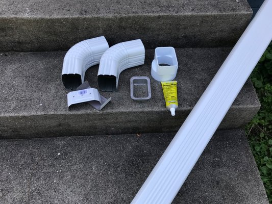

Key Home Improvements
Custom seamless gutters - more than 30 years in the trade
Gutter work, start to finish
Seamless gutters cut on your driveway, plus guards, repairs and cleaning before the wet season.
5" and 6" K-Style gutters
Seamless aluminum gutter run in the size your roof actually needs.
Fascia gutters
Deep, boxy fascia profiles for a clean architectural line.
Gutter guards
Mesh and hood systems that keep leaves out and water moving.
Gutter repairs
Leaks, seams, sagging runs and overflowing corners fixed fast.
Gutter cleaning
Clear-outs before the wet season so nothing overflows.
Soffit & fascia repair
Rot, venting and trim repaired alongside the gutter work.

Custom seamless gutters - more than 30 years in the trade
Key Home Improvements LLC is a family-owned, licensed, bonded and insured gutter contractor run by Ron and Kelley Key. We measure your roofline, quote an exact price up front, and roll the gutter machine on site so every length fits your home exactly.
- 5" and 6" K-Style gutters
- Fascia gutters
- Gutter guards
- Gutter repairs
From our customers
I had new gutters installed by Ron and his crew. They were punctual, professional and did an excellent job. I'm very happy with the service and would highly recommend them.
Good to know
How much do new gutters cost?
Most homes run $6-$8 per foot, installed. We quote a firm price up front.
Do you fabricate on site?
Yes - the seamless gutter machine comes to your driveway.
Are you licensed?
Yes. CCB #228717, licensed, bonded and insured.